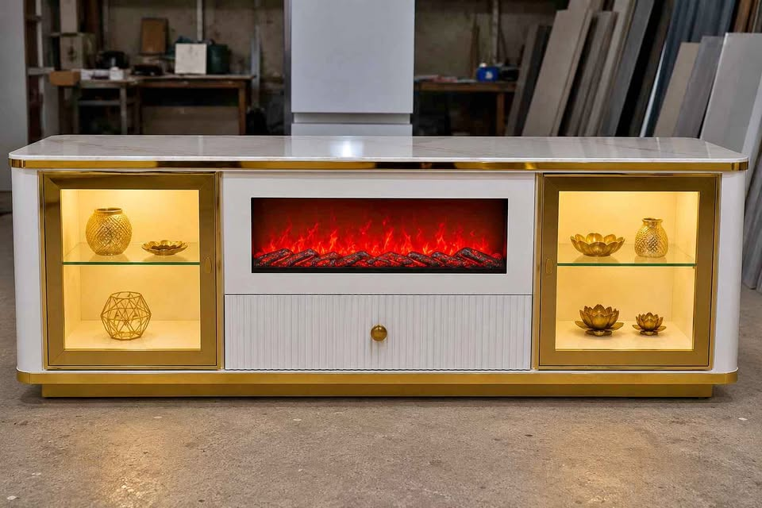

When buying luxury furniture, most people focus 90% of their attention on the design and only 10% on the surface finish. Yet, within 18 to 24 months, the surface finish is the only thing that determines whether your ₹50,000 console still looks like a museum masterpiece or looks like chipped roadside timber.
1. What is PU (Polyurethane) Polish?
Polyurethane (PU) polish is a polymer coating originally developed for high-end luxury automobiles (like Mercedes and BMW) and marine vessels. Unlike conventional wood varnishes or laminates that sit as a separate glued layer on top of timber, PU polish involves an intricate multi-step chemical reaction:
- Base Primer & Grain Sealing: High-density sealer coats fill microscopic porous fibers in the HDMR board.
- Color Pigment Layer: Computerized pigment matching using premium ICA or Sirca automotive paints.
- 2K Polyurethane Topcoats: Two-component reactive clear coats (resin + isocyanate hardener) that molecularly fuse together into a rock-hard, non-porous shell.
2. The Head-to-Head Comparison: PU vs Melamine vs Laminate
| Performance Metric | Automotive PU Polish | Melamine Polish | Decorative Laminate (Mica) |
|---|---|---|---|
| Surface Seamlessness | 100% Seamless (zero edge-banding lines) | Seamless but thin coating | Visible black joints & edge tape |
| Scratch & Impact Resistance | Extremely High (elastomeric flex) | Moderate (brittle, chips easily) | High on flat surfaces, vulnerable on edges |
| Yellowing Under UV / Sunlight | Zero Yellowing (aliphatic UV inhibitors) | Severe yellowing within 2 years | Color fades unevenly |
| Moisture & Water Spills | 100% Waterproof Seal | Water rings form easily | Edge glue peels when damp |
| Touch & Feel | Silk-soft, warm, architectural | Plastic-like finish | Cold, synthetic laminate feel |
| Warranty Coverage | 5-Year Paint Fade & Peel Warranty | No warranty | 1-year manufacturer default |

High-Gloss White & Brass LED Sideboard
5 × 3 Feet • Dual Fluted Side Bays • Illuminated Display Core • 5-Year Color Stability Guarantee
3. High-Gloss vs. Soft Matte PU: Which Should You Choose?
At Factory Finish Furniture, we spray both high-gloss (95% reflective sheen) and dead-matte (5% soft architectural sheen) finishes in our Delhi spray booths:
- High-Gloss PU: Reflects chandelier and spotlight illumination like polished marble. It works exceptionally well in dining rooms, entrance foyers, and areas where you want a striking, opulent statement.
- Soft Matte PU: Absorbs glare and gives a warm, serene Scandinavian or Japandi aesthetic. It is completely fingerprint-resistant and looks spectacular in bedrooms and TV lounges.
4. How We Back Our 5-Year Warranty
Because we do not cut corners by mixing kerosene into polish thinners (a common practice among quick-buck carpentry contractors), our PU finish does not oxidize or yellow over time. Every piece leaving our Delhi workshop comes with an assured 5-Year Paint & Color Fade Warranty.